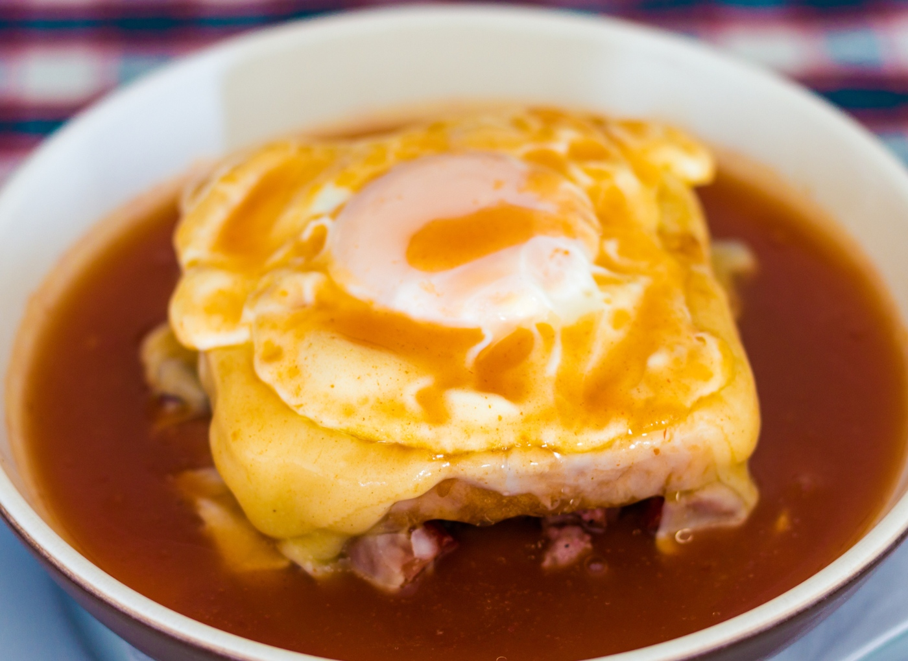

Go back
Francesinha Recipe

Description
Francesinha is a traditional Portuguese sandwich, often described as a "Portuguese croque-monsieur."
It consists of layers of thinly sliced cured meats, such as ham and linguiça (smoked sausage), and steak, all sandwiched between slices of bread.
Ingredients
- 2 slices/pp Loaf Bread (thick cut)
- 1 Linguiça/pp Cured traditional Portuguese pork sausage with a distinct orange look due to the usage of paprika. Aka “Portuguese Sausage” in the New England area and Hawai. Also can be found in Brazilian stores/butchers.
- 1 Sausage/pp (salsicha fresca) Uncured traditional Portuguese pork sausage. Closest equivalent would be Italian sausage.
- 2 slices/pp Ham (sliced thin)
- 2 slices/pp Baloney (sliced thin)
- 1 steak/pp Rump steak (cut thin)
- 5-6 slices/pp Flamengo cheese slices
- 1 Egg/pp (optional)
- 130 g/pp Fries (optional)
Steps
- Slightly toast the bread – in the oven or in the toaster but without smooshing it, so it doesn’t lose its thickness.
- Cook the steak medium/rare and allow it to rest away from the heat for a few minutes, to retain the juices. Slit it slightly so that it’s easier to cut later on.
- Cut the linguiça and the Italian sausage length wise and trim them, if necessary, to match the size of the bread. Cook them in the same pan as the steak.
- Fry the egg(s) in the same pan again (optional). Fry the potatoes on the side (opcional).
- Assembling: after toasted, place one slice of bread in a deep dish that can go in the oven, and lay the slices of ham and baloney over the bread; place the sausage and the linguiça interspersed, side by side, and then the steak; place the second slice of bread on top and cover it all with cheese slices.
- Turn on the broil and place it in the oven until the cheese has melted.
- Remove from the oven, (place the egg on top), pour at least two ladles of sauce over the francesinha and serve immediatly.
- Pour the rest of the sauce in a gravy boat and serve seperately (as well as the fries).